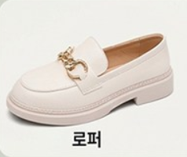
이미지 준비 중입니다
신발장에 모셔둔 신발이 있는 분
디자인이 마음에 쏙 들어 샀는데 뒤꿈치가 너무 아파 한두 번 신고 신발장에 방치해 둔 신발이 있으신가요? 완충 보호 패치가 뻣뻣한 가죽 뒤축을 즉각 부드럽게 감싸줍니다.
새 신발 뒤꿈치 까짐 예방부터, 헤진 안감 셀프 수선까지
딱딱한 뒤축에 살갗이 쓸리는 고통은 부드럽게 원천 차단하고, 닳아서 구멍 난 신발 안감은 3초 만에 깔끔 복원!
구두 · 로퍼 · 스니커즈 어디에나 자유롭게 잘라 붙이는 5+5 실속 세트(총 10P)로 매일 가볍게 걸으세요.
⚡ 쿠팡 로켓배송으로 빠르게 수령 가능 (쿠팡에서 실시간 옵션·가격 확인 후 결정)
이 포스팅은 쿠팡 파트너스 활동의 일환으로, 이에 따른 일정액의 수수료를 제공받습니다.
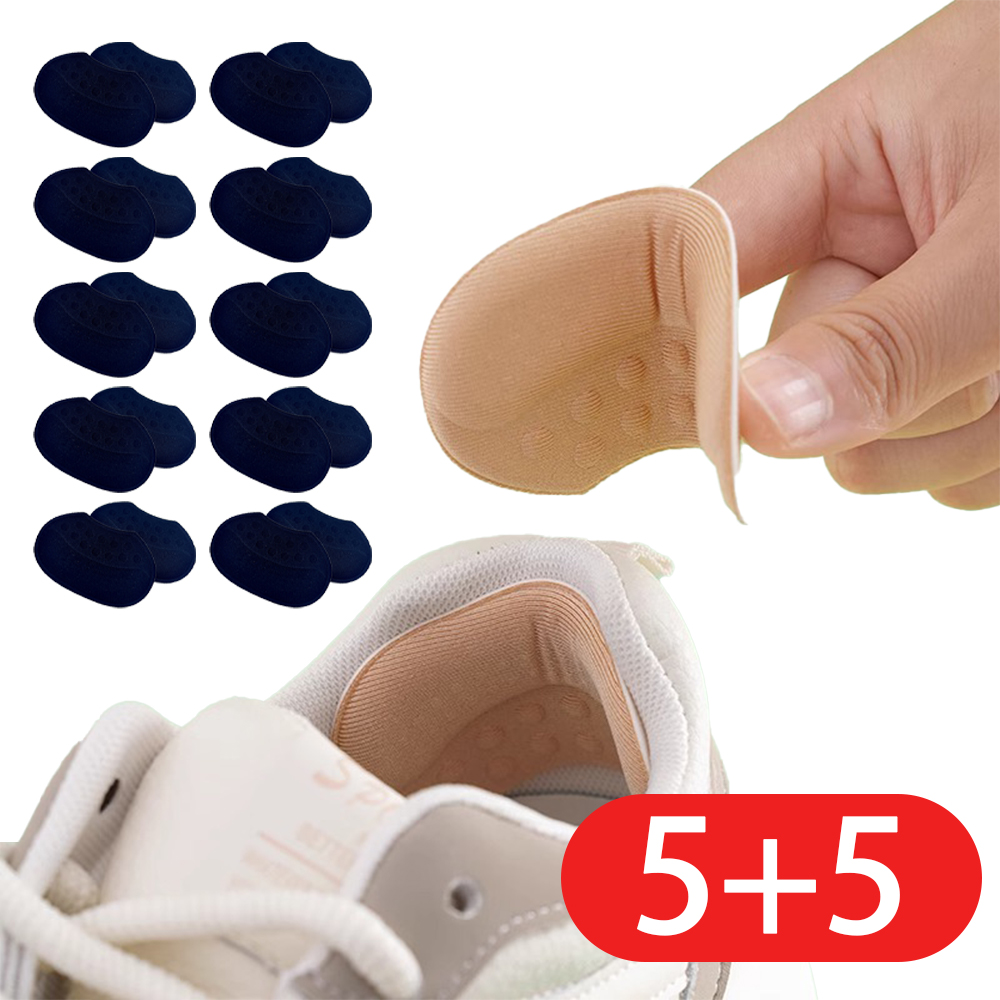
딱딱한 뒤축 마찰을 부드럽게 흡수하여 새 구두 첫 착용 시에도 살갗 쓸림 없는 편안함
마찰로 닳거나 찢어진 신발 뒤축 안감을 티 나지 않고 깔끔하게 복원하는 강력 수선 패치
신발 뒤축 높이와 라인에 맞춰 가위로 손쉽게 잘라 쓰는 자유로운 프리 컷 디자인
총 5켤레분의 넉넉한 수량으로 여러 신발에 분배하고 여유 있게 교체하는 실속 구성
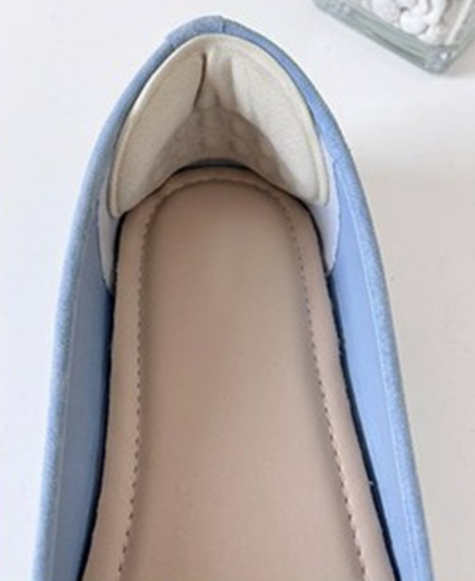
인생샷 한 장 남기겠다고 설레는 마음으로 챙겨 신은 로퍼와 구두.
하지만 1~2시간만 걸어도 뒤축이 살갗을 긁어대며 피가 나고, 편의점 밴드는 10분 만에 땀과 마찰에 밀려 떨어져 나갑니다.
뿐만 아니라 자주 신는 아끼는 신발은 가장 먼저 뒤꿈치 안감이 닳아 구멍이 나 버립니다.
신발을 버리거나 방치할 필요 없이, 3초 부착으로 뒤축의 날카로운 마찰을 막고 닳은 안감을 깔끔하게 수선하여 예쁜 신발을 더 오래, 더 편안하게 지켜드립니다.
"새 신발은 뒤축이 뻣뻣해 살갗을 파고들고,
자주 신는 신발은 안쪽 천이 닳아 헤져 뒤꿈치를 찌르기 시작합니다."
빨갛게 부어오른 살갗 위에 급한 대로 편의점 밴드를 덧붙여보지만,
10분만 걸어도 땀과 마찰에 둘둘 말려 떨어져 나가고 신발 안은 끈적임으로 얼룩집니다.
겉은 멀쩡한데 뒤꿈치 안감만 찢어져 신지 못하고 신발장에 처박아뒀던 아까운 신발, 누구나 한 켤레쯤 있으실 겁니다.

디자인이 마음에 쏙 들어 샀는데 뒤꿈치가 너무 아파 한두 번 신고 신발장에 방치해 둔 신발이 있으신가요? 완충 보호 패치가 뻣뻣한 가죽 뒤축을 즉각 부드럽게 감싸줍니다.
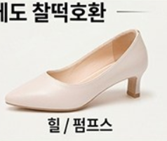
중요한 미팅, 하객 룩, 출근길 복장 규정 때문에 발목 통증을 참아가며 구두를 신어야 하는 직장인. 자연스러운 안감 매칭으로 밖에서 전혀 티 나지 않게 뒤꿈치를 보호합니다.
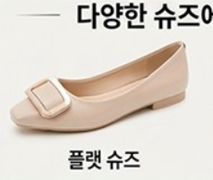
여행지 명소를 누비거나 외근으로 장시간 서서 활동하는데 뒤꿈치 물집으로 일정이 불안한 분. 안정적인 밀착 지지력이 보행 중 뒤축 마찰을 완벽히 흡수합니다.
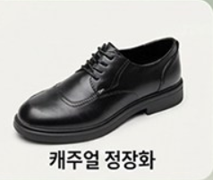
겉은 멀쩡하지만 뒤축 안감만 찢어져 신을 때마다 쓸리고 불편했던 운동화와 구두. 3초 간편 부착으로 찢어진 안감을 감쪽같이 메워 새 신발처럼 살려냅니다.
뒤꿈치 쓸림 방지와 안감 복원을 동시에 만족하는 듀얼 케어 설계.
피부 자극 없는 부드러운 패브릭과 강력 점착 층의 만남.
뒤축 마찰과 보행 압력을 부드럽게 분산하여 발목 쓸림과 물집 통증을 원천 차단
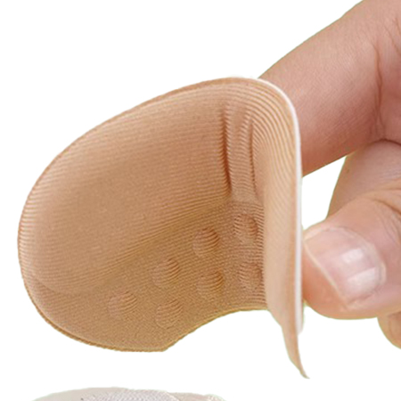
마찰로 헤지거나 구멍 난 뒤축 안감을 티 나지 않고 견고하게 덮어주는 복원 설계
구두, 로퍼, 스니커즈 여러 켤레에 여유 있게 나눠 붙이고 교체하는 가성비 세트
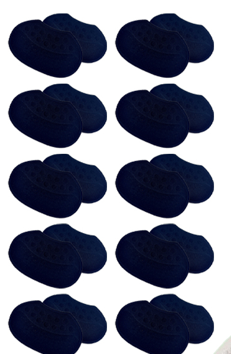
| 제품명 | 5+5 구두 뒤꿈치 까짐방지 패드 신발 수선 패치 |
|---|---|
| 구성 | 5+5 세트 (총 10P / 총 5켤레분 사용) |
| 주요 용도 | 구두·로퍼 뒤꿈치 쓸림 예방 및 신발 안감 마모 수선 |
| 특징 | 3초 이형지 탈착, 가위 맞춤 재단 프리 컷 구조 |
| 보증 기준 | 공정거래위원회 고시 소비자분쟁해결기준 의거 교환·환불 |
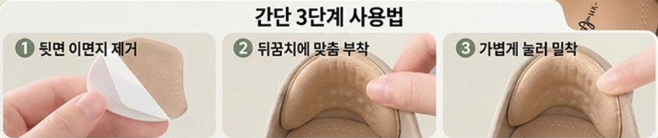
부착 전 신발 뒤꿈치 안쪽 먼지를 마른 천으로 닦은 후, 패치 뒷면의 보호 필름을 떼어냅니다.
신발 뒤축의 쓸림 부위나 닳은 안감 위치에 맞춰 알맞은 높이로 패드를 조심스럽게 안착시킵니다.
손가락으로 패드 중심부터 가장자리까지 꾹 눌러 빈틈없이 단단하게 고정합니다.
쿠팡 실구매 고객님들의 100% 리얼 사용 후기
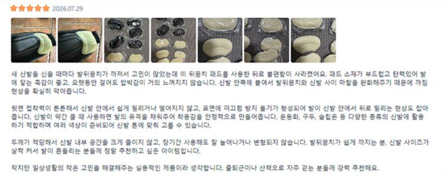
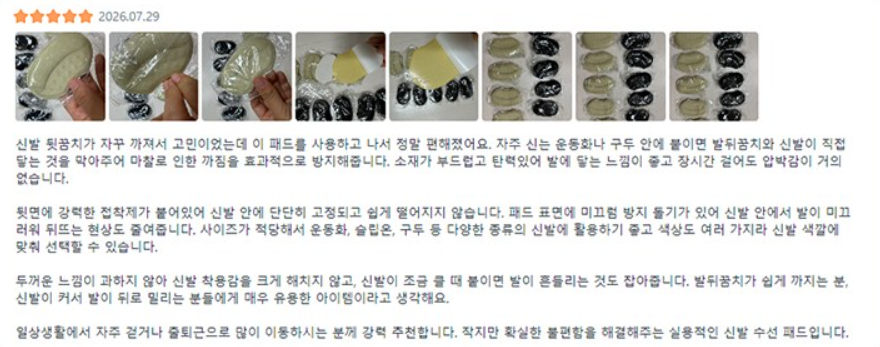
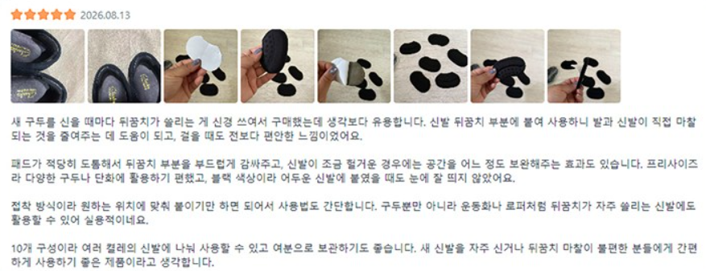
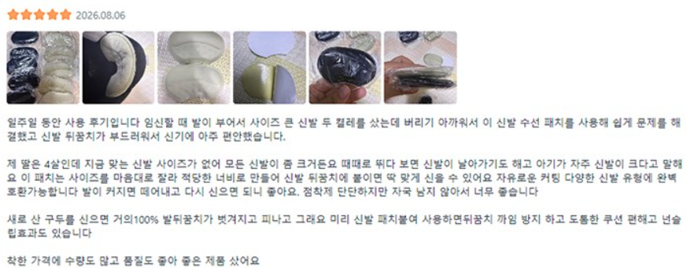
Simple answers about sizing, adhesives, and shoe restoration.
본 패치는 뒤꿈치 쓸림을 방지하면서도 신발 내부 공간을 과도하게 차지하지 않도록 설계되었습니다.
또한 가위로 손쉽게 잘라 쓸 수 있는 재단형 구조이므로, 공간이 타이트한 신발에는 높이나 면적을 필요한 만큼 잘라내어 사이즈 간섭을 최소화하면서 쓸림 부위나 닳은 부위만 집중 보호·수선할 수 있습니다.
신발 전용 점착 층이 적용되어 신발을 신고 벗을 때도 안정적으로 유지됩니다.
접착력을 100% 발휘하려면 부착 전 신발 안쪽의 먼지와 땀/유분을 마른 천으로 깨끗이 닦아내고, 완전히 건조된 상태에서 손으로 꾹 눌러 부착해 주세요. 건조된 상태에서 올바르게 부착하시면 보행 중 밀림 없이 견고하게 고정됩니다.
네, 구두 뒤꿈치 까짐 방지는 물론 운동화, 로퍼, 플랫슈즈 등 마찰로 인해 안감이 찢어지거나 헤진 모든 신발에 수선 패치로 간편하게 활용하실 수 있습니다.
5+5 실속 세트(총 10P)로 구성되어 있어 한 번 구매로 여러 켤레의 신발을 넉넉하게 관리하실 수 있습니다.
뒤꿈치 까짐 방지 + 헤진 신발 안감 셀프 수선까지 한 번에!
5+5(총 10P) 실속 세트로 구두도, 발걸음도 편안하게 지켜드립니다.
이 포스팅은 쿠팡 파트너스 활동의 일환으로, 이에 따른 일정액의 수수료를 제공받습니다.
* 쿠팡 공식 페이지에서 실시간 가격과 옵션을 확인하신 후 신중하게 결정하실 수 있습니다.